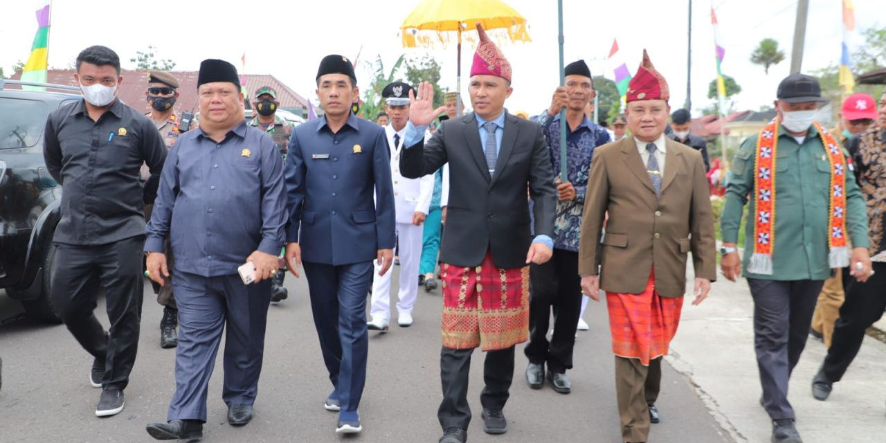
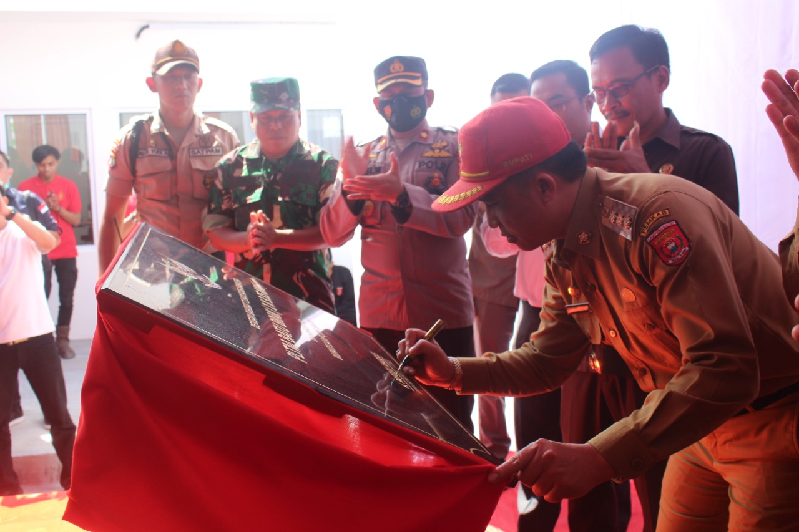
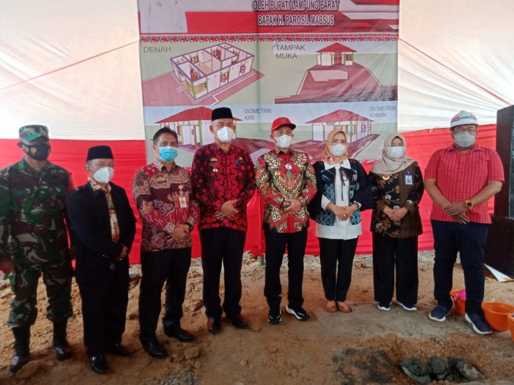

Bupati Lam-Bar Menghadiri Dalam Peletakkan Batu Pertama Pembangunan Posyandu Di Desa Kegeringan Kecamatan Batubrak
Penyaluran Bantuan Langsung Tunai Tahap Pertama Di Pekon Kegeringan.

Peresmian PLTM Batu Brak PT. TOP oleh Bupati Lampung Barat Hi. Parosil Mabsus.

Pesta sakura di desa kegeringan
